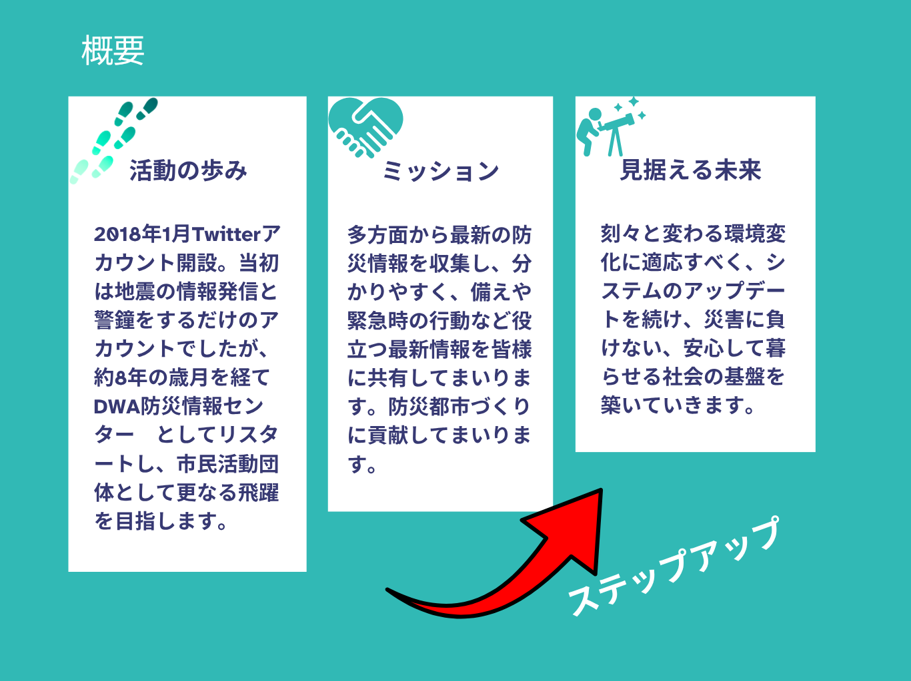
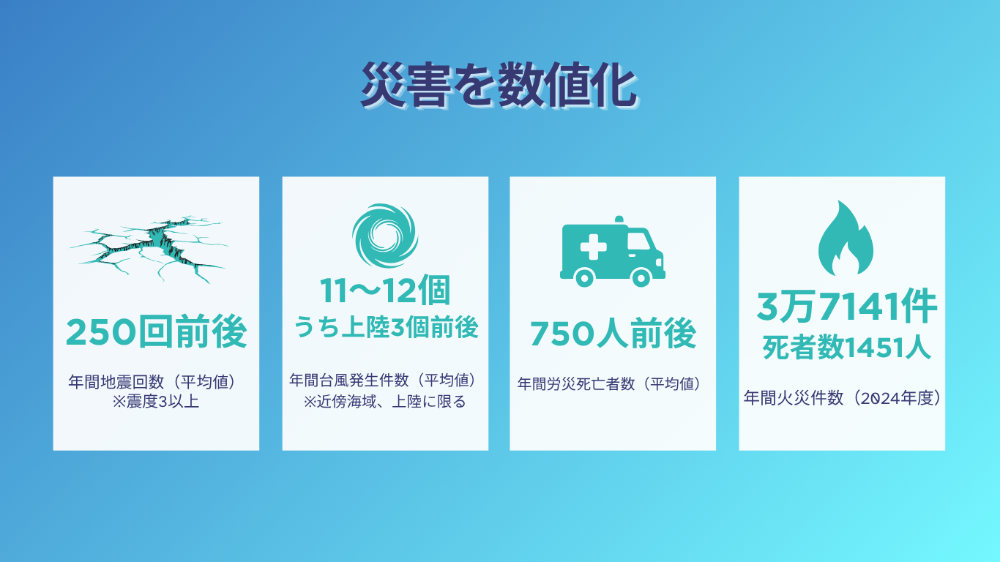
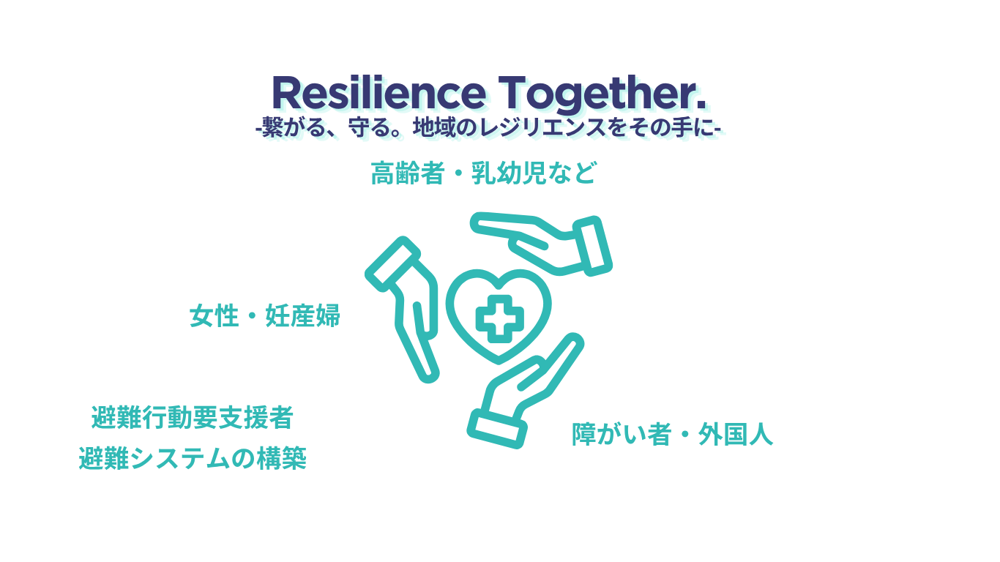

メッセージ
近年、自然災害の規模が大きくなり、激甚化しつつあります。原因は気候変動、温室効果ガスの増加であると指摘されています。また、太陽活動や地球の自転軸の変動など、様々な要因により自然災害の規模や性質が複雑化しています。
私たちに今できること。それが「備え」です。
自宅備蓄、避難袋の備え、生活水の備蓄、ハザードマップの再点検、避難所経路のシミュレーション、家族との連絡手段の確立、防災アプリの導入やSNSでの情報収集、電源の確保など、できることは沢山あります。
「一人はみんなのために、みんなは一人のために」
― One for all, All for one ―
この言葉を胸に、一緒に長岡京市に防災の輪を広めていきましょう。
▶ 活動紹介ムービー（タップで再生）



「避難行動要支援者」は、以下の3つの大きな課題に直面します。
避難勧告や周囲の状況を迅速に把握できず、避難のタイミングを失う。
身体的理由や車椅子、ベビーカーの使用により、自力での迅速な避難が困難。
避難所でのプライバシー確保、バリアフリー対応、専門的なケアの欠如により、心身の健康を著しく損なうリスクが高い。
避難行動要支援者の推移
| 2000年 | 2025年 | 増減率 | |
|---|---|---|---|
| 高齢者（65歳以上） | 約2,294万人 | 約3,639万人 | +65.1% |
| 身体障がい者 | 約351万人 | 約436万人 | +24.2% |
| 知的障がい者 | 約46万人 | 約109万人 | +137% |
| 精神障がい者 | 約258万人 | 約615万人 | +138.4% |
| 乳幼児（0〜4歳） | 約593万人 | 約380万人 | −35.9% |
| 妊産婦 | 約119万人 | 約66万人 | −44.2% |
| 在留外国人 | 約169万人 | 約376万人 | +122.5% |
2025年時点の国のデータによると、名簿登録された避難行動要支援者のうち、具体的な支援者が決まっている「個別避難計画」の作成済み割合は約20%弱。支援者1人に対し、5人以上の要支援者が存在する計算です。要支援者の約8割に支援の目途が立っていない、極めて厳しい状況です。「誰が助けるか」という実効性の確保が、喫緊の課題となっていることが浮き彫りになっています。
2030年 誰も取りこぼさない防災社会の実現へ
「発信」から「実装」へ。現在運用中の防災サイトと支援ツールは、行政の手が届きにくい「発災直後の空白の時間」を埋めるためのものです。
特に喫緊の課題である避難行動要支援者の個別避難計画については、支援の目途が立っていない方が大半です。自治体や消防と緊密に連携し、デジタル技術を駆使して「誰が、どこで、誰を助けるか」を可視化するシステム構築を目指します。
一人ひとりが確実な支援を受けられるレジリエンス（回復力）の高い社会を、共につくり上げていきましょう。